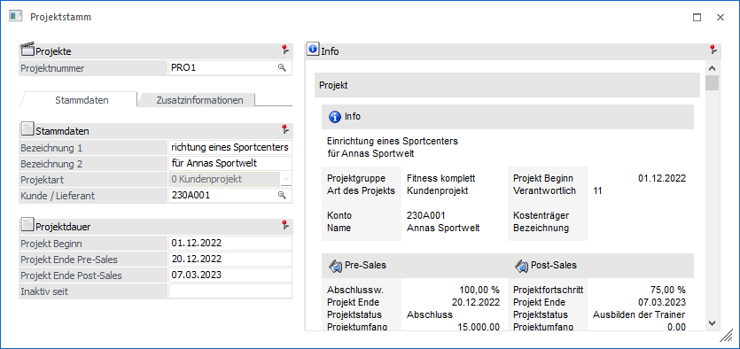
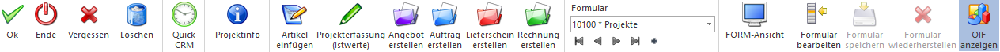

Dieses Fenster wird geöffnet, wenn im Projektstamm ein alternatives Formular zur Bearbeitung von Stammdaten ausgewählt wurde.
Hinweis
Bei Nutzung der FORM-Ansicht wird der Projektstamm in einem "Lesemodus" geöffnet, d.h. es können bestehende Projekte aufgerufen und kontrolliert werden, ein Ändern bzw. eine Neuanlage ist nicht möglich. Hierfür muss zunächst mit Hilfe des Buttons "Editieren" der "Bearbeitungsmodus" aktiviert werden.
Ø Formular
Über die Auswahlbox "Formular" kann gewählt werden, in welcher Form der Stammdatensatz bearbeitet werden soll. Wenn die Option "0 - Allgemein" gewählt wird, dann wird wieder in die "Normalansicht" mit allen Eingabefeldern zurückgeschalten.
Hinweis
Die Definition der Formulare für die individuelle Gestaltung erfolgt im Programm WinLine START über den Menüpunkt "Vorlagen - Vorlagen Anlage - Individuelle Formulare". Das Ergebnis davon könnte z.B. so aussehen:

Buttons

Ø Ok / Editieren
Durch Anwahl des Buttons "Ok" bzw. der Taste F5 werden die vorgenommenen Änderungen bzw. die Neuanlage abgespeichert.
Hinweis
Bei Nutzung der FORM-Ansicht wird zunächst der Button "Editieren" dargestellt. Durch dessen Anwahl gelangt man in den "Bearbeitungsmodus", in welchem der Button "Ok" zur Verfügung steht.
Ø Ende
Bei Anwahl des Buttons "Ende" bzw. der Taste ESC wird das Fenster geschlossen und alle nicht gespeicherten Eingaben verworfen.
Ø Vergessen
Durch Anwahl des Buttons "Vergessen" bzw. der Taste F4 wird die Anzeige des ausgewählten Projekts beendet und der Fokus auf das Feld "Projektnummer" gesetzt. Alle vorgenommenen Änderungen werden dabei verworfen.
Ø Löschen
Mittels des Buttons "Löschen" können angelegte Projekte wieder entfernt werden.
Hinweis
Wird die Projektnummer in Belegen verwendet, erfolgt eine zusätzliche Sicherheitsabfrage, ob das Projekt trotzdem gelöscht werden soll (im Beleg selbst bleibt die Projektnummer erhalten).
Ø Quick CRM
Wenn dieser Button angeklickt wird, kann ein CRM-Fall zu dem gerade geöffneten Projekt erfasst werden. Voraussetzung dafür ist:
ü Es muss eine gültige CRM-Lizenz vorhanden sein.
ü Der Benutzer muss ein CRM-Benutzer sein.
ü Es müssen entsprechende CRM-Aktionen bzw. CRM-Workflows mit der Kennzeichnung "QUICK CRM" angelegt sein.
Hinweis
Es werden im WinLine Standard 9 CRM-Aktionen (CRM-Gruppe "100") mitgeliefert.
Ø Projektinfo
Es wird die Projektabrechnung geöffnet, in welcher alle relevanten Daten des aktuellen Projekts aufgelistet werden.
Ø Artikel einfügen
Bei Serviceprojekten können mit Hilfe dieses Buttons die zugehörigen Wartungsartikel (Artikel für welche ein Service durchgeführt wird) erfasst werden.
Hinweis
Es stehen nur jene Artikel zur Verfügung, die im Artikelstamm (Register "Lager" - Unterregister "Einstellungen") das Kennzeichen für Serviceprojekt auf "1 - eröffnen" gestellt haben.
Ø Projekterfassung (Istwerte)
Durch Anwahl dieses Buttons können die Budget- bzw. Istwerte für das Projekt erfasst werden (Artikel und Ressourcen). Nähere Informationen diesbezüglich entnehmen Sie bitte dem Kapitel "Projekterfassung".
Ø Angebot/Auftrag/Lieferschein/Rechnung erstellen
Mit Hilfe dieser Buttons können Angebote, Aufträge, Lieferscheine und Rechnungen für das aktuelle Projekt erfasst werden. Es wird hierfür ein neuer Beleg für den entsprechenden Kunden geöffnet und die Projektnummer des aktuell ausgewählten Projektes übernommen. Wird die Belegstufe im Beleg geändert, wird die Projektnummer wieder entfernt.
Hinweis
Neben diesem automatischen Weg können natürlich auch Belege manuell (über die Belegerfassung mit Eingabe der Projektnummer) erfasst werden.
Ø Formular
Über die Auswahlbox "Formular" kann gewählt werden, in welcher Form der Stammdatensatz bearbeitet werden soll. Wenn die Option "0 - Allgemein" gewählt wird, dann wird wieder in die "Normalansicht" mit allen Eingabefeldern zurückgeschalten.
Hinweis
Die Definition der Formulare für die individuelle Gestaltung erfolgt im Programm WinLine START über den Menüpunkt "Vorlagen - Vorlagen Anlage - Individuelle Formulare".
Ø VCR-Buttons
Über die so genannten VCR-Buttons, welche in jedem Register zur Verfügung stehen, kann durch Mausklick zwischen den Datensätzen geblättert werden.
ü  Damit kann der
erste Datensatz angesprochen werden.
Damit kann der
erste Datensatz angesprochen werden.
ü  Damit kann der
vorherige Datensatz angesprochen werden.
Damit kann der
vorherige Datensatz angesprochen werden.
ü  Damit kann der
nächste Datensatz angesprochen werden.
Damit kann der
nächste Datensatz angesprochen werden.
ü  Damit kann der
letzte Datensatz angesprochen werden.
Damit kann der
letzte Datensatz angesprochen werden.
ü  Damit wird die
nächste freie Nummer für die Neuanlage gesucht.
Damit wird die
nächste freie Nummer für die Neuanlage gesucht.
Ø FORM-Ansicht
Mit Hilfe dieses Buttons kann die sogenannte "FORM-Ansicht" aktiviert werden. Im Gegensatz zur klassischen Eingabe unterstützt diese folgende Funktionen:
ü Lese- und Bearbeitungsmodus
ü Responsive HTML-Design
ü Erweiterte Layout-Komponenten
Hinweis
Die FORM-Ansicht basiert immer auf der Definition des individuellen Formulars. Die Gestaltung des Layouts kann wiederum in der WinLine INFO über den Menüpunkt "FORM - Designer" erfolgen.
Ø Formular bearbeiten
Durch Anwahl des Buttons "Formular bearbeiten" wird das ausgewählte Formular (d.h. die Vorlage) in einen Bearbeitungsmodus versetzt (Felder können verschoben, entfernt oder neue einfügt werden). Durch eine erneute Anwahl des Buttons wird der Modus wieder verlassen.
Hinweis
Der Button kann nur angewählt werden, wenn das Objektrecht "bearbeiten" (oder höher) für das individuelle Formular vorhanden ist.
Ø Formular speichern
Mit Hilfe dieses Buttons können vorgenommene Formularänderungen gespeichert werden.
Ø Formular wiederherstellen
Wenn Formularänderungen getätigt wurden, dann kann durch Anwahl des Buttons "Formular wiederherstellen" das ursprüngliche Formular wiederhergestellt werden.
Ø OIF anzeigen
Mit Hilfe dieses Buttons kann der OIF-Bereich im rechten Bereich des Fensters aktiviert bzw. deaktiviert werden.
Hinweis
Eine Aktivierung ist nur möglich, wenn in der Vorlage die Option "OIF anzeigen" aktiviert wurde.